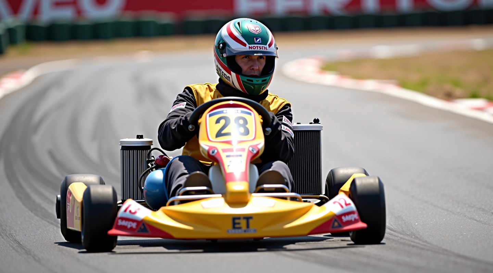

ضرب نقطة الأبكس وخط السباق في الكارتينج
تعلم التقنيات الحقيقية التي تفرق بين السائقين. من اختيار الخط الصحيح إلى التسارع الأمثل عند الخروج من المنحنى.
نحن نركز على الأساسيات التي تعمل. شرح عملي لكل خطوة، بدون تعقيدات.

لماذا يهم خط السباق الصحيح
الفرق بين السائق السريع والسائق العادي ليس دائماً السرعة — بل الخط الذي يختاره. نقطة الأبكس ليست مجرد نقطة عشوائية في المنحنى. إنها الموضع الدقيق الذي يسمح لك بالدخول بسرعة أعلى والخروج بتسارع أقوى.
نحن نشرح كل تفصيلة. متى تبدأ الكبح؟ أين تضغط الدواسة؟ كيف تحسب الخط قبل الدخول في المنحنى؟ هذه ليست نظرية — إنها خطوات عملية يمكنك تطبيقها مباشرة على الحلبة.
المقالات الأساسية
ابدأ بهذه الدروس الثلاثة
2022
بدأنا في نشر محتوى تدريبي عملي حول تقنيات السباق الصحيحة
التركيز
نركز على شرح المبادئ الأساسية: الأبكس، الكبح، التسارع، إعدادات السيارة
الموقع
نتحدث عن حلبة القطامية في القاهرة وتطبيق التقنيات على مسارات حقيقية
الأسلوب
شرح مباشر وعملي بدون تعقيدات — فقط ما تحتاجه لتحسين أدائك
مسارنا في بناء المحتوى
2022
بدأنا بنشر أول الدروس العملية عن اختيار خط السباق الصحيح
2023
أضفنا شروحات مفصلة عن تقنيات الكبح وأهميتها في الأداء
2024
توسعنا لتغطية التسارع الأمثل وإعدادات السيارة المؤثرة
2025
طورنا محتوى أكثر تفصيلاً يربط النظرية بالتطبيق العملي على الحلبة
2026
واصلنا تحديث الدروس بناءً على تقنيات السباق الحديثة والملاحظات الميدانية
الفرق الذي يحدثه الفهم الصحيح
بدون فهم خط السباق
- تختار خطاً عشوائياً في كل منحنى
- تكبح في الوقت الخاطئ وتفقد السرعة
- تخرج من المنحنى ببطء أكثر من اللازم
- لا تعرف لماذا السائقون الآخرون أسرع منك
- كل جولة مختلفة عن السابقة بلا تحسن منطقي
مع فهم صحيح
- تختار نقطة الأبكس بدقة قبل الدخول
- تعرف متى تبدأ الكبح بناءً على سرعتك
- تخرج بتسارع قوي واستقرار عالي
- تفهم لماذا هذا الخط أسرع من غيره
- كل جولة تتحسن عن السابقة بخطوات واضحة
ما ستتعلمه هنا
اختيار الخط الصحيح ليس عملية معقدة. نحن نشرح كيفية تحديد نقطة الأبكس بناءً على زاوية المنحنى وسرعتك. ستفهم لماذا بعض الخطوط تسمح بسرعة أعلى من غيرها، وكيفية حساب الموضع المثالي قبل الدخول.
تقنيات الكبح هي الخطوة الأولى نحو السرعة. نعلمك متى تبدأ الكبح، كم مسافة تحتاج قبل المنحنى، وكيفية تقليل السرعة دون فقدان السيطرة. الكثيرون يكبحون في الوقت الخاطئ — سنصحح هذا لديك.
التسارع الأمثل عند الخروج هو ما يفصلك عن المنافسين. بعد الأبكس مباشرة، تحتاج إلى تطبيق التسارع بذكاء. نشرح الوقت المناسب، الضغط المطلوب، وكيفية الحفاظ على الاستقرار.
إعدادات السيارة تؤثر على كل شيء. من ضغط الإطارات إلى ارتفاع السيارة، كل تفصيل يؤثر على خط السباق. نغطي الإعدادات الأساسية التي تحدث فرقاً حقيقياً في الأداء.
مجالات التركيز
نقطة الأبكس
فهم دقيق لكيفية اختيار الموضع الأمثل في المنحنى لتحقيق أقصى سرعة.
الكبح والتحكم
تقنيات الكبح الصحيحة والتوقيت المثالي قبل دخول كل منحنى.
التسارع الديناميكي
كيفية تطبيق التسارع بذكاء عند الخروج من المنحنى دون فقدان الاستقرار.
إعدادات السيارة
فهم كيف تؤثر إعدادات الإطارات والارتفاع على خط السباق والأداء العام.
تحليل الأداء
كيفية قياس تحسنك وتحديد المناطق التي تحتاج إلى عمل أكثر.
السباقات الفعلية
تطبيق كل هذه التقنيات في سباقات حقيقية على حلبة القطامية.
أشهر الدروس
ابدأ مع هذه المقالات الثلاث الأساسية

كيفية إيجاد نقطة الأبكس الصحيحة في المنحنيات
الأبكس ليس مجرد نقطة عشوائية. شرح عملي لكيفية اختيار الخط الأمثل الذي يسمح لك بالخروج بأقصى سرعة من كل منحنى.
اقرأ المقال
تقنيات الكبح قبل دخول المنحنى
الكثير يكبحون في الوقت الخاطئ. هنا ستتعلم متى وأين تبدأ الكبح لتحقيق أفضل نتيجة ممكنة.
اقرأ المقال
التسارع الأمثل عند خروجك من المنحنى
الخروج من المنحنى بشكل صحيح هو ما يفرق بين الفائز والخاسر. تعلم كيفية تطبيق التسارع بذكاء.
اقرأ المقالهل أنت مستعد لتحسين أدائك؟
لا تتردد في التواصل معنا إذا كان لديك أسئلة أو تريد مساعدة أكثر تفصيلاً. نحن هنا لنساعدك على فهم كل جوانب السباق الاحترافي.
تواصل معنا الآننستخدم ملفات تعريف الارتباط لتحسين تجربتك على الموقع. بمتابعتك، أنت توافق على استخدامنا لها.